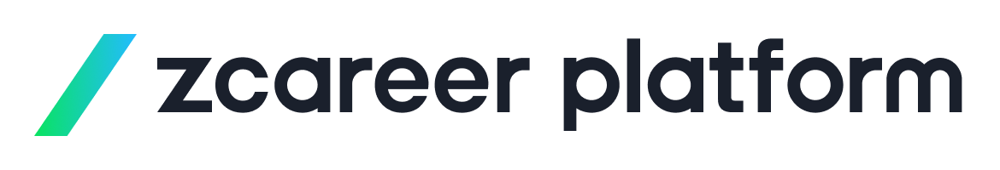

保有求人を、決定と収益に変える。
中堅・大手エージェント様向け ご提案資料
エージェント経営の構造課題
なぜ保有求人は「眠る」のか
求人シェアリングという解
仕組みとプラットフォーム規模
中堅・大手にとっての3つの価値
マネタイズ・決定力・ノーリスク
貴社専用 AI求人レコメンドエンジンの共創
選考データの資産化
コストをかけて開拓した求人の多くは、
自社の求職者だけでは動かせず「休眠」している。
担当者の稼働も、職種カバー範囲も有限。保有求人が増えるほど、決定に至らない在庫が積み上がる。
保有求人
求職者が集まるのは、選択肢＝求人量が豊富なプラットフォーム。量が好循環の起点になる。
求人量
幅広い選択肢が
求職者を惹きつける
送客力
求職者が集まり
マッチ機会が増える
決定数
決定が次の求人を呼ぶ
さらに
求人が
集まる
量を持つ者が、送客と決定を制する。だからこそ「持ち寄って増やす」シェアリングが効く。
Your Company
貴社の
保有・開拓求人
自社で動かしきれない求人を共有
Platform
Zキャリア
プラットフォーム
求人を自動で公開・流通。掲載は無料
CA Network
約400社の
社外CA網
各社が求職者を送客し選考へ
決定が生まれると、完全成功報酬で貴社に収益が還元される。
約400社
送客を担う社外CA網
業界最大級の人材紹介ネットワークが、
貴社の求人に求職者を送り込む。
全国・全職種
医療・介護、地方、ハイレイヤー、希少領域まで広くカバー
完全成功報酬
掲載は無料。決定が出たときだけコストが発生
休眠求人の
マネタイズ
動かせなかった求人が、約400社のCA網で決定に。追加開拓ゼロで収益化。
自社CAの
決定力強化
扱える求人の幅が広がり、提案力と応諾・決定率が向上。
ノーリスクでの
参画
掲載無料・完全成功報酬・自動公開。始めるハードルが低い。
自社で動かせなかった求人を、約400社のCA網が送客・決定。
これまで収益0円だった「眠っていた在庫」が、追加の開拓コストなしで動き出す。
休眠求人
決定・収益化
保有数が多い中堅・大手ほど、
マネタイズできる「在庫」が大きい。
シェアされた他社求人も、貴社のCAが扱える。
提案できる求人の幅が一気に広がり、求職者を取りこぼさない。応諾率・決定率の底上げに直結する。
FREE
掲載は無料
求人の公開にコストはかからない。固定費リスクなし。
PAY ON SUCCESS
完全成功報酬
決定が出たときだけコストが発生。無駄打ちがない。
AUTOMATED
自動で公開
求人データは自動変換で公開。現場の追加工数を最小化。
まずは保有求人の一部からでも、低リスクで始められる。
求人情報の連携方法は、そのまま現場の運用工数に直結する。フォーマット変換までカバーするのは、業界でZキャリアプラットフォームのみ。
Level 1
A社
求人1件ごとに手入力。件数が増えるほど現場負担が増す。
Level 2
B社
一括投入はできるが、自社フォーマットへの変換は現場作業のまま。
Level 3
Zキャリア
プラットフォーム
CSVをそのまま投げるだけでいい。フォーマット変換まで自動で完結し、現場の入力工数はほぼゼロに。
同じ1万件の求人でも、対応レベルによって実務時間はまったく違う。
A社（手入力のみ）
約833時間
営業日換算 約104日
10,000件 × 5分/件
B社（CSVアップロード）
約20時間
営業日換算 約3日
フォーマット変換 約20時間
（専門知識を持つ担当者が必要）
Zキャリアプラットフォーム
約30分
件数に関わらずほぼ一定
アップロードのみで完了。フォーマット変換は自動処理。
※試算：A社＝手入力5分/件、B社＝フォーマット変換 約20時間、Zキャリアプラットフォーム＝フォーマット自動変換によりアップロード時間のみで算出（件数によらずほぼ一定）。実際の所要時間は運用条件により異なります。また、求人情報に欠損がある場合は、内容確認・補完のため別途対応が発生します。
求人シェアリングへのご参画は、単なる求人の流通にとどまらない。プラットフォームに蓄積される選考データを学習源に、貴社独自の高精度マッチングシステムを構築する。
貴社の求人に対し、社内CAだけでなく約400社の社外CAからの「推薦・選考・合否データ」がリアルタイムで蓄積される。
社内CA
自社の推薦・選考データ
約400社の社外CA
膨大な推薦・選考・合否データ
YOUR ASSET
貴社の
選考データ資産
リアルタイムに積み上がり続ける、独自の学習ソース
大量の選考データをAIが学習・重み付けし、「どの求職者属性が、どの求人で、どれくらいのリードタイムで内定に至るか」の予測精度が自動的に進化する。
選考データ蓄積
400社の推薦・合否
AIが学習・重み付け
内定要因をモデル化
高精度レコメンド
決定率・速度が向上
データが増えるほど賢くなる ── 使うほど決定が積み上がる学習ループ。
フルカスタマイズ版
貴社の選考基準や固有の合否ロジックを100%反映した、貴社専用のマッチングエンジンを構築。
自社の勝ちパターンをそのままモデル化したい大手・準大手向け。
パッケージ版
特定の職種・領域に特化。CAの経験が浅くても、即座に高い応諾・決定率を生む高汎用モデル。
立ち上げスピードと再現性を重視する組織向け。
参画・求人連携
保有求人を連携。一部からでもOK。
自動公開・送客開始
自動変換で公開、CA網が送客。
選考データ蓄積
推薦・選考・合否がリアルタイムに。
専用エンジン提供
貴社のAIレコメンドを構築・提供。
休眠求人をマネタイズ ── 約400社のCA網が、眠った在庫を決定に変える
自社CAの決定力を強化 ── 提案の幅が広がり、応諾・決定率が上がる
選考データを資産化 ── 貴社専用のAIレコメンドエンジンを共創

低リスクで始め、決定とデータ資産を積み上げていく。